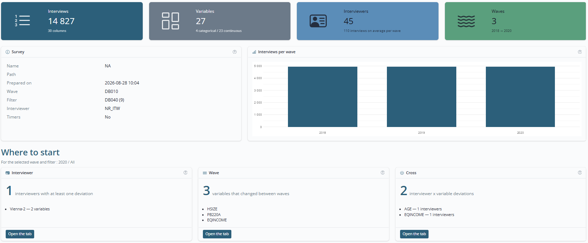
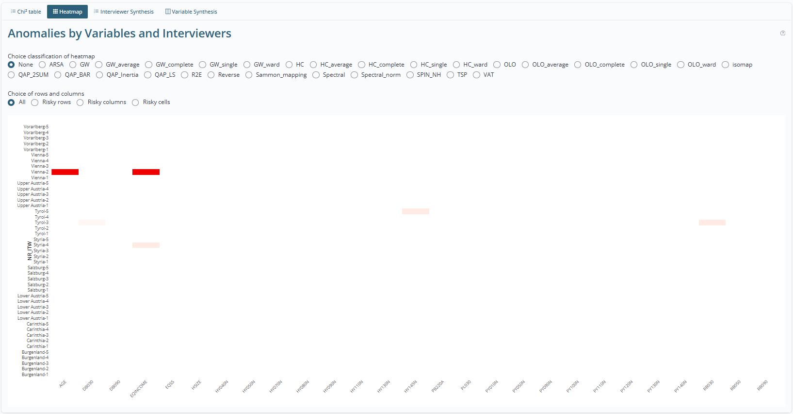
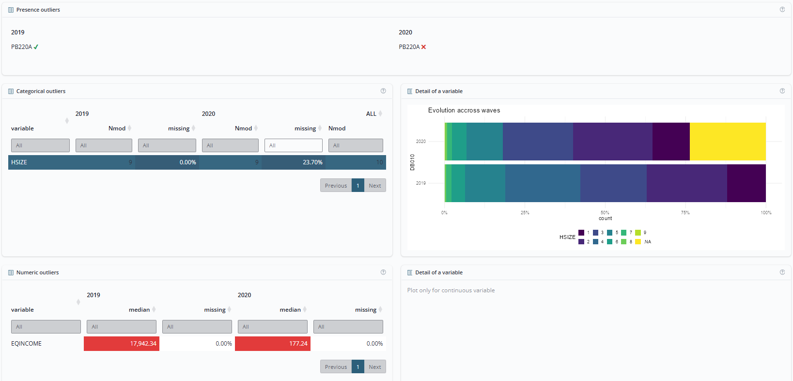

vizsurvey est un package R conçu pour faciliter le contrôle qualité des données d’enquête, grâce à des diagnostics visuels réunis dans un tableau de bord interactif. Il s’adresse particulièrement aux instituts et aux équipes de recherche conduisant des enquêtes de grande ampleur avec de nombreux enquêteur·rices : il offre une vue rapide et systématique de la qualité des données, entre vagues et entre enquêteur·rices.
vizsurvey ne tire aucune conclusion à votre place : il calcule des écarts (distances de chi², scores d’anomalie, indices d’homogénéité) et les met en évidence pour prioriser la relecture. L’interprétation reste celle de l’équipe d’enquête.
Fonctionnalités clés
- Un tableau de bord Shiny interactif : onglet de synthèse, analyse par enquêteur·rice, analyse par vague, croisement enquêteur·rice × variable (heatmap), exploration des données, archive partagée des vérifications
- Le calcul automatisé des statistiques par vague et/ou par enquêteur·rice, avec des vagues et des filtres à un ou deux niveaux (par exemple année et trimestre)
- Un traitement unifié des variables : les continues sont découpées en classes et comparées comme les catégorielles, avec une seule distance de chi²
- L’analyse de l’audit trail (timers) quand il est disponible : durées d’entretien, travail de nuit, entretiens trop rapprochés (en refonte)
- Des outils de préparation pour gérer plusieurs enquêtes en routine (
config.txt,prepa_surveys), avec dictionnaire de variables, nomenclature de libellés et archive partagée - Une aide contextuelle sur chaque carte, une visite guidée intégrée, et une interface en français, anglais et néerlandais
La documentation complète et les vignettes (en français) sont disponibles sur https://tdelc.github.io/vizsurvey.
Installation
Vous pouvez installer la version de développement de vizsurvey depuis GitHub :
install.packages("devtools") # si nécessaire
devtools::install_github("tdelc/vizsurvey")Une publication sur le CRAN est prévue une fois la version 1.0.0 atteinte.
Comment utiliser vizsurvey ?
vizsurvey s’utilise de deux manières complémentaires. On peut appeler directement ses fonctions de calcul pour produire les statistiques ou les heatmaps dans un flux reproductible (rapports automatisés, contrôles planifiés) ; ces fonctions sont documentées dans une vignette dédiée. On peut aussi — c’est l’usage principal — lancer le tableau de bord interactif.
La façon la plus simple de découvrir l’interface est de partir du jeu d’exemple intégré, dérivé de l’enquête SILC, dans lequel des erreurs volontaires ont été injectées :
library(vizsurvey)
df <- create_eusilc_sim()
runVizsurvey_from_r(df,
var_intvwr = "nr_itw",
var_wave = "db010",
var_filter = "db040")L’onglet de synthèse accueille l’utilisateur·rice avec une présentation de l’enquête et trois points d’entrée chiffrés vers les analyses. Une visite guidée, accessible depuis la barre de navigation, parcourt l’interface pas à pas sur les données chargées.

L’effet enquêteur·rice s’explore via une heatmap par enquêteur·rice et par variable. Chaque case se clique pour afficher les distributions détaillées et la comparaison entre l’enquêteur·rice et le reste de la population.

L’effet vague est présenté sous forme de tableaux d’anomalies (variables absentes, distributions qui bougent, médianes qui décrochent), accompagnés de graphiques dédiés pour comprendre la nature de chaque écart.

L’utilisation complète du tableau de bord est documentée dans une vignette de prise en main.
Pour les organisations gérant plusieurs enquêtes en routine, une vignette de préparation des données décrit comment structurer les dossiers, configurer chaque enquête (config.txt) et précalculer les statistiques, de sorte que l’ouverture de l’interface soit immédiate pour toute l’équipe :
# config.txt et prepa_surveys sont supposés déjà en place ;
# voir la vignette de préparation des données
runVizsurvey_from_folder("data", depth_folder = 3)Notes de développement
Version actuelle : 0.4.3 — voir le fichier NEWS pour le détail des versions.
Les noms des fonctions et des arguments sont encore susceptibles d’évoluer sur la base des premiers retours d’usage. Notre objectif est une stabilité complète de l’API à partir de la version 1.0.0.
vizsurvey s’appuie sur deux couches de packages existants :
- une couche de calcul (préparation et analyse), fondée sur l’écosystème tidyverse et {data.table} :
cli,data.table,dplyr,isotree,lubridate,magrittr,purrr,rlang,scales,stats,tibble,tidyr,tidyselect; - une couche de visualisation et de tableau de bord :
bslib,bsicons,DT,ggplot2,plotly,shiny,shiny.i18n,shinybusy.